Tekna reference board
Four directions. Note which images make you feel "yes, that's me". Images: Wikimedia Commons.
A · Stepwells and Indian modernism
Geometry, warm sandstone and brick, light and shadow. India, built with precision.
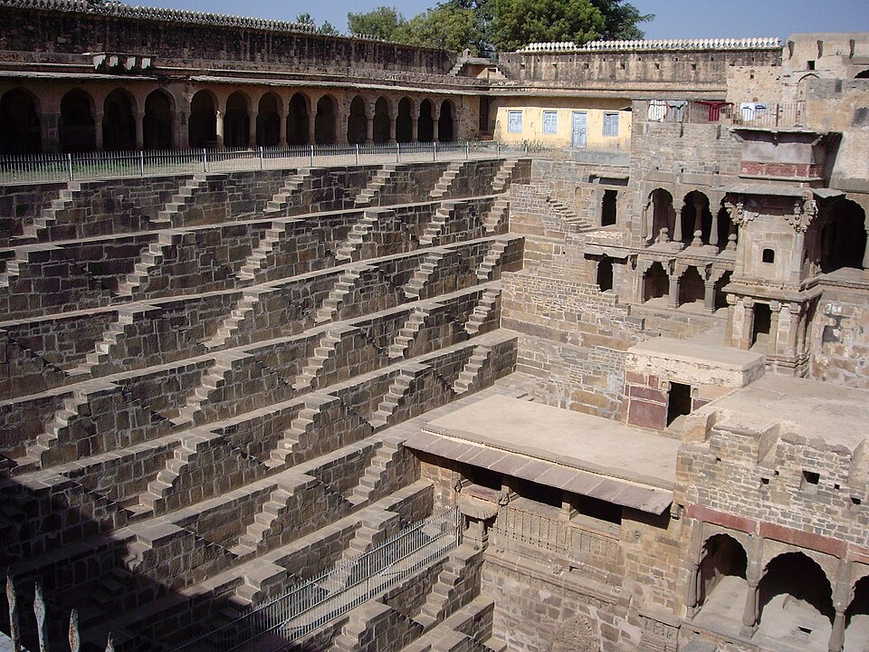
1. Chand Baori stepwell, Rajasthan (9th c.)3,500 steps in perfect repeating geometry
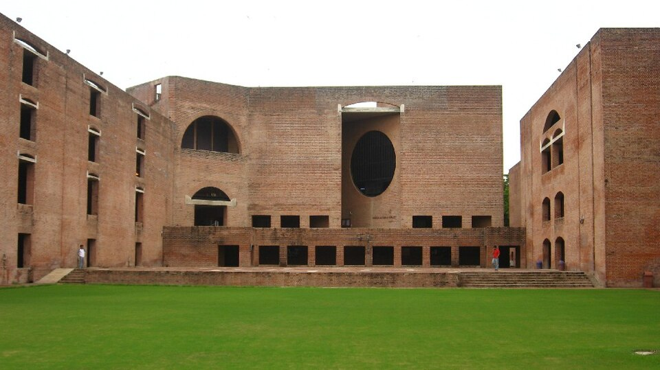
2. IIM Ahmedabad, Louis Kahn (1962)Brick, circles cut into walls, deep shadow
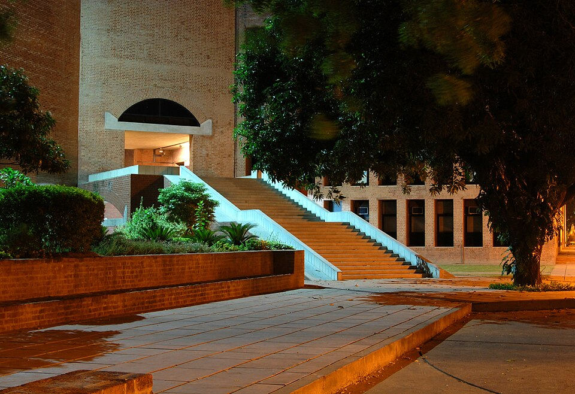
3. IIM Ahmedabad stairsWarm red brick, strict, calm
B · Tadao Ando: concrete and light
Japanese restraint. Smooth grey concrete, one precise line of light.
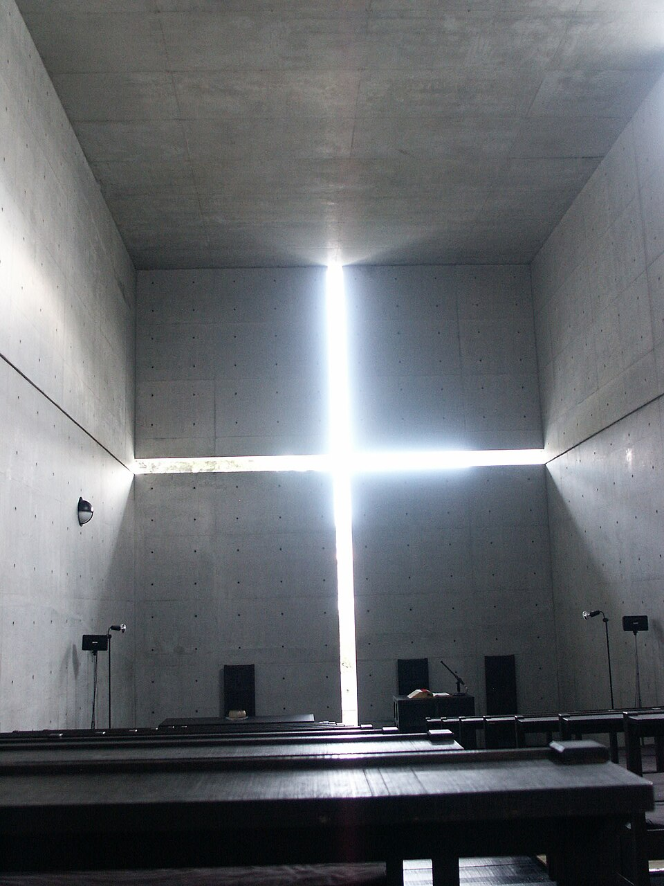
4. Church of the Light, OsakaA cross cut into a wall: the light is the design
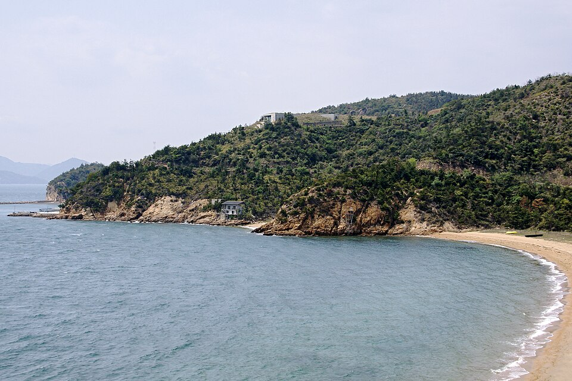
5. Chichu Art Museum, NaoshimaArchitecture buried in landscape, quiet geometry
C · Abstract painting
Big fields of colour (Rothko) or a strict grid with primary-colour accents (Mondrian).
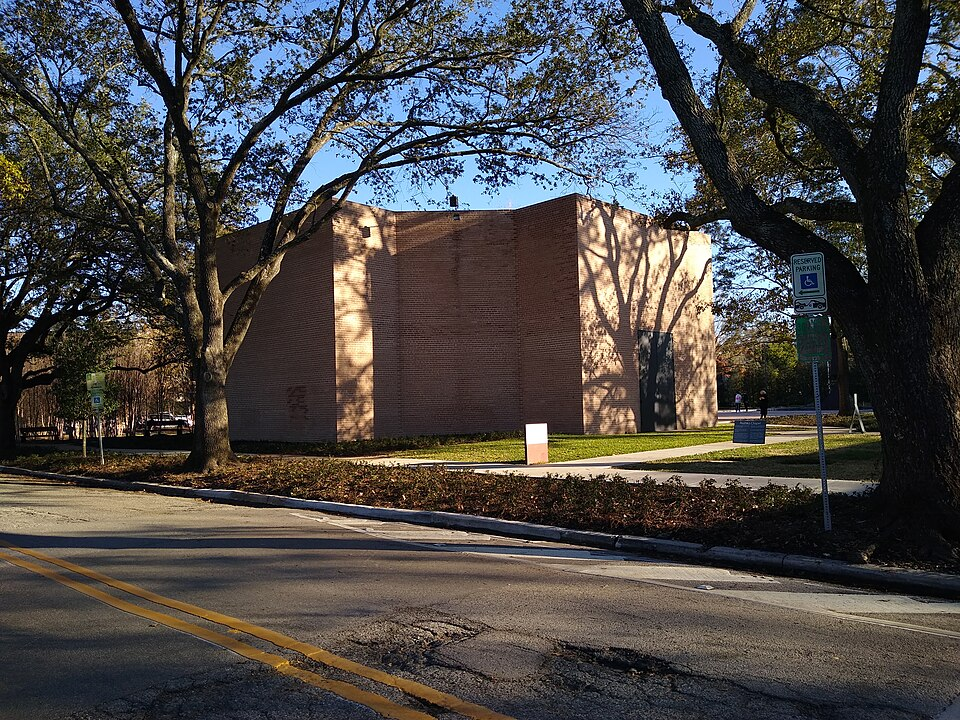
6. Rothko Chapel, HoustonDeep, meditative colour fields
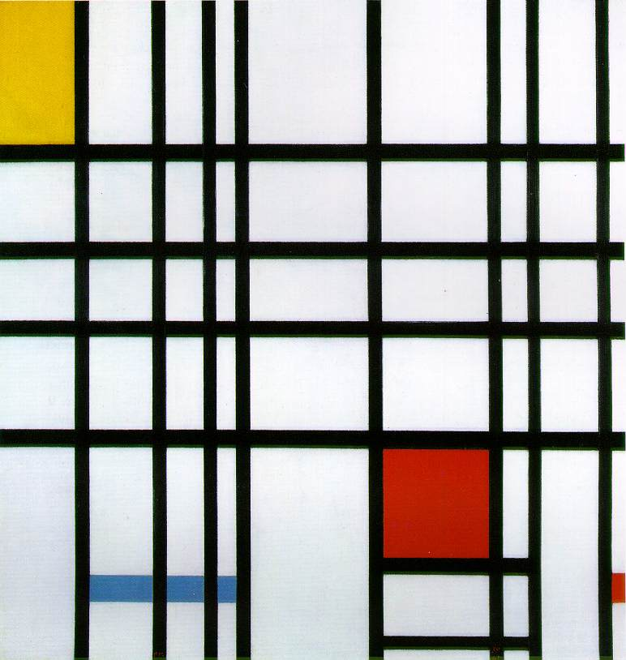
7. Mondrian, Composition with red, yellow and blueGrid + white space + a few bold colours
D · Geometric pattern (India + Japan)
Handmade systems: patterns built from rules, like code.
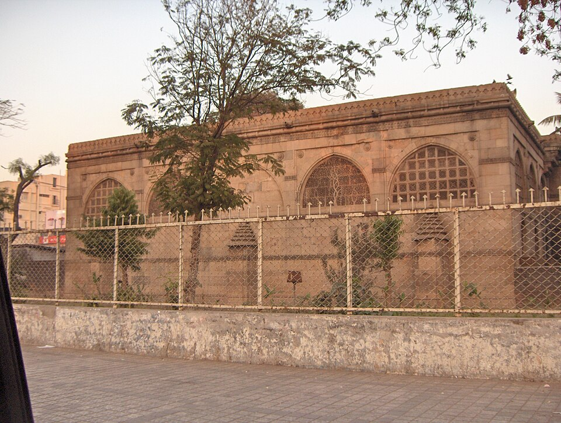
8. Sidi Saiyyed jaali, AhmedabadCarved stone screen, tree of life
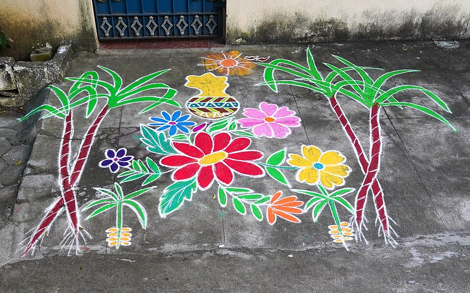
9. Kolam, Tamil NaduDaily threshold drawings built on a dot grid
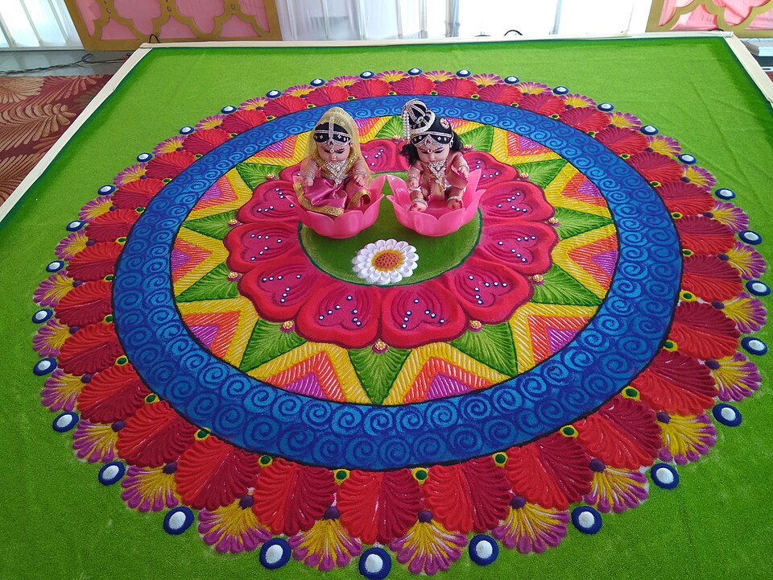
10. RangoliFestival colour, radial symmetry
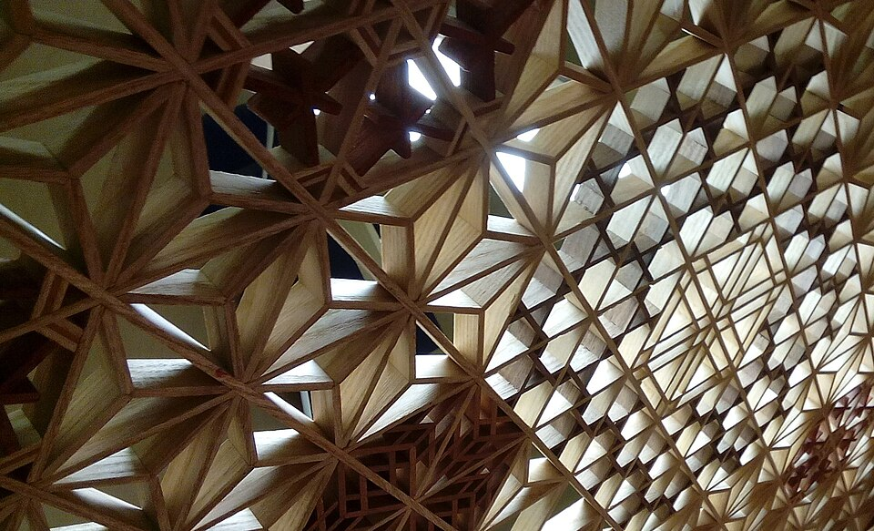
11. Kumiko woodwork, JapanWooden lattice joined without nails
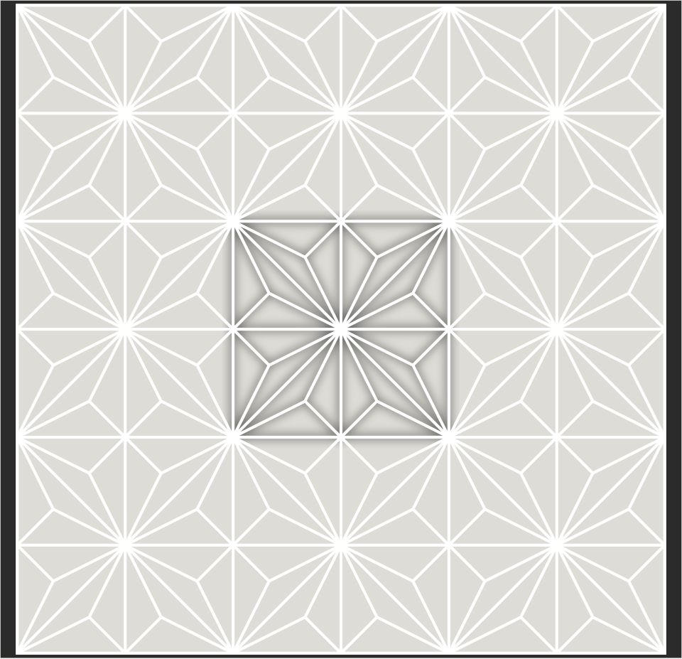
12. Asanoha kumiko patternHemp-leaf geometry, pure rule-based form